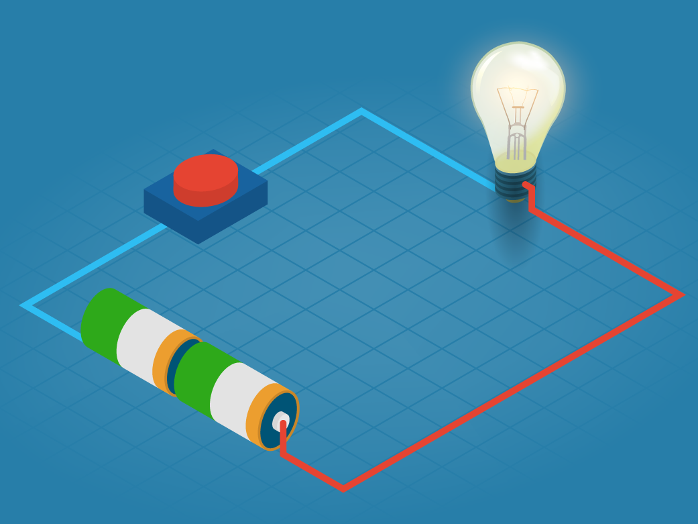
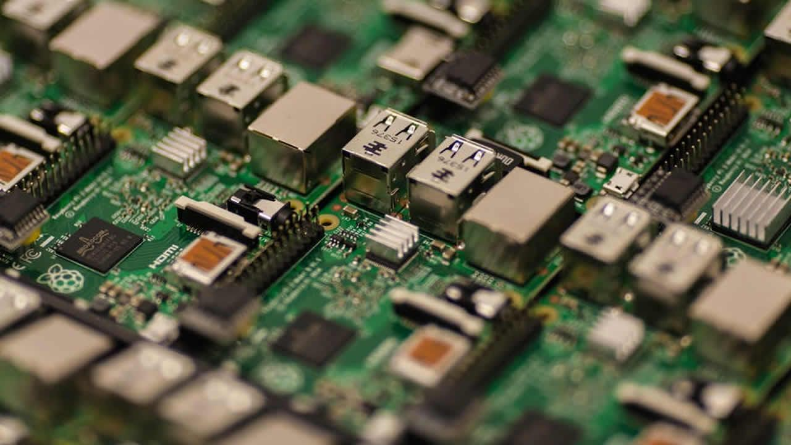

Circuitos Lógicos
¿Qué es un circuito?
Un circuito es un recorrido formado por cables y otros componentes que conducen electricidad. El recorrido tiene que estar cerrado, lo que significa que no hay espacios vacíos. Un circuito se puede usar para varias cosas, desde distribuir corriente eléctrica a varios lugares, hasta almacenarla o convertirla en otro tipo de energía. La red eléctrica que recorre las calles y alimenta nuestras casas es un ejemplo de un circuito.
Lo que le da la funcionalidad a un circuito son sus componentes. Desde cosas muy sencillas como baterías y cables, hasta artefactos más complicados como un multiplexor, cada componente hace una cosa diferente con la corriente que pasa a través de él.
¿Qué es un circuito lógico?
Un circuito lógico es una forma de representar una proposición lógica. Las proposiciones lógicas son cosas muy abstractas, como las ecuaciones matemáticas. Al igual que en las matemáticas, se utilizan operaciones y variables para representar diferentes proposiciones. No te preocupes si no sabes nada de lógica proposicional o si no entiendes estos símbolos, no los necesitas para entender lo que es un circuito lógico. Lo único que debes saber es que una variable lógica solo puede ser verdadera o falsa y que el resultado de una operación lógica siempre es verdadero o falso.
Componentes básicos
En los circuitos de Circuit Sandbox solo existen 4 tipos de componentes: cables, entradas, salidas y compuertas.
Cables: Los cables son el esqueleto del circuito. Son los componentes que permiten que la electricidad fluya. Si un cable tiene corriente, prenderá a todos los cables que estén conectados a él.
Entradas: Las entradas son la fuente de energía del circuito. Son parecidas a una batería, pero a diferencia de esta, las entradas no siempre están prendidas.
Salidas: Las salidas son el resultado del circuito, son el punto en el que todos los cables convergen.
Compuertas lógicas
Las compuertas lógicas son un poco más complicadas que el resto de los componentes. Una compuerta simula un operador lógico. Las compuertas pueden recibir corriente a través de cables y luego emiten corriente dependiendo de lo que recibieron. Esto se
entenderá más fácil al analizar las compuertas una por una.
Repetidor: El repetidor es la compuerta más sencilla de todas. Está conectado a un cable por la izquierda y lo único que hace es mandar esa corriente a un cable que tiene a la derecha. Un repetidor es idéntico a un cable con la
excepción de que si el tuviera un cable prendido a la derecha, no prendería al cable a su izquierda.
Not: La compuerta not es como un repetidor pero al revés. Tiene un cable conectado a la izquierda y otro a la derecha, la compuerta emitirá una corriente al cable de la derecha si el cable de la izquierda está apagado, pero no emitirá
señal alguna si está apagado.
Or: Or tiene dos cables a la izquierda y emite corriente a su derecha solo si alguno de los cables de la izquierda esta prendido.
And: Al igual que Or, tiene dos cables a la derecha, pero solo emite corriente a su derecha si ambos cables conducen corriente tambien.
Normalmente se le llama entrada a los cables que dan corriente a la compuerta y salida al cable que es alimentado por la compuerta. La salida de una compuerta depende del tipo de compuerta que es y de cuales de sus entradas están
prendidas o apagadas. Pensandolo de esta forma, todos los circuitos lógicos son en realidad una compuerta grande. tienen una entrada, luego la corriente fluye de diferentes formas y pasa por compuertas para finalmente llegar a una
salida. Esta salida puede conducir corriente o no, al igual que en la lógica proposicional una operación solo puede dar positivo o negativo.
¿Por qué son importantes los circuitos lógicos?
Todas las operaciones que hace un celular, una laptop o un cajero automático son en realidad el resultado de un circuito lógico. Todas las computadoras hacen operaciones para relizar cualquier tipo de tarea, desde saber que color darle a cada pixel en una pantalla hasta reproducir un sonido o hacer una trasferencai de banco, una computadora procesa información con circuitos lógicos. No solo eso, los componentes mencionados anteriormente son todos los necesarios para armar cualquier circuito lógico en cualquier computadora. No es nada obvio como es posible que con los componentes vistos anteriormente se puedan calcular tantas cosas, además una computadora tiene millones de estos componentes, todos trabajando en sincronía para procesar información en forma de cables prendidos y cables apagados.
